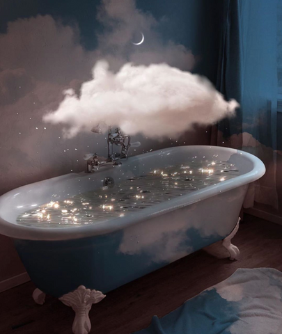

Motivational images
Our visual library:

You are not surprised to see some steam in your bathroom after a nice evening bath. When you look up at the foggy ceiling, it reminds you of the beautiful clouds on a clear night, which are also formed when the warm water vapor meets the cool air.
Why can't clouds be formed in the bathroom? Out of place, you may say, but we bet it must look dreamy. And why the toys are flying? Shouldn't they stay inside the bathtub?
Features
Davide
- Modeling Meshes (5)
- - E.g. meshes representing toys for our bathtub.
- Simple Denoising: Bilateral Filter with Pixel Variance Estimates (10)
- - To render scenes faster.
- Environment Map Emitter (15)
- - To make our scene visually more pleasing.
- Disney BSDF (15)
- - To represent a wide array of materials for the bathroom and our toys.
- Advanced Camera Model (15)
- - Interesting effects using different parametrizations.
Yitian
- Images as Textures (5)
- - For models with image textures.
- Percedual Textures (5)
- - E.g. the noise-based marble texture [1] as the floor material.
- Percedual Volumes (5)
- - E.g. Perlin-Worley noise [2]. It can be used to model the shape of clouds.
- Textured Area Emitter(5)
- - To use textured light for the room.
- Bump Mapping or Normal Mapping (5)
- - To add details for the models.
- Anisotropic Phase Function (5)
- - Henyey-Greenstein. Needed in participating media.
- Heterogeneous Volumetric Participating Media (30)
- - To rendering the clouds.
References
[1] Texture noise. PBRT Book 3rd. https://www.pbr-book.org/3ed-2018/Texture/Noise
[2] Nubis: Authoring Real-Time Volumetric Cloudscapes with the Decima Engine https://advances.realtimerendering.com/s2017/index.html/a>